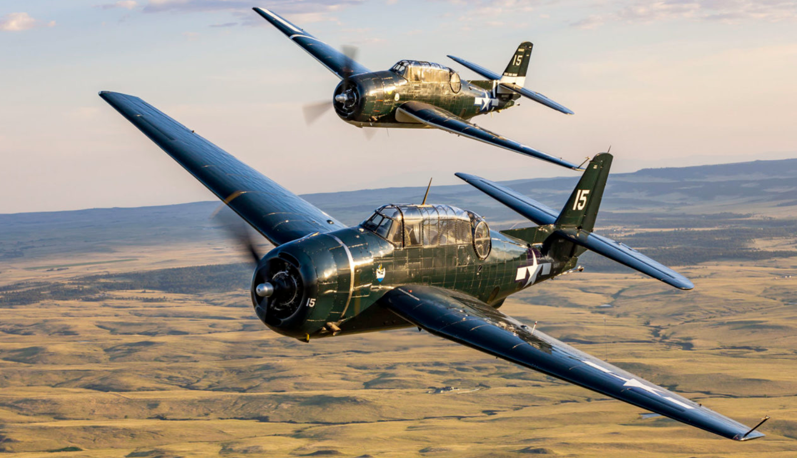
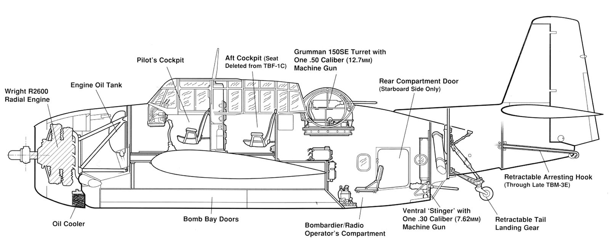
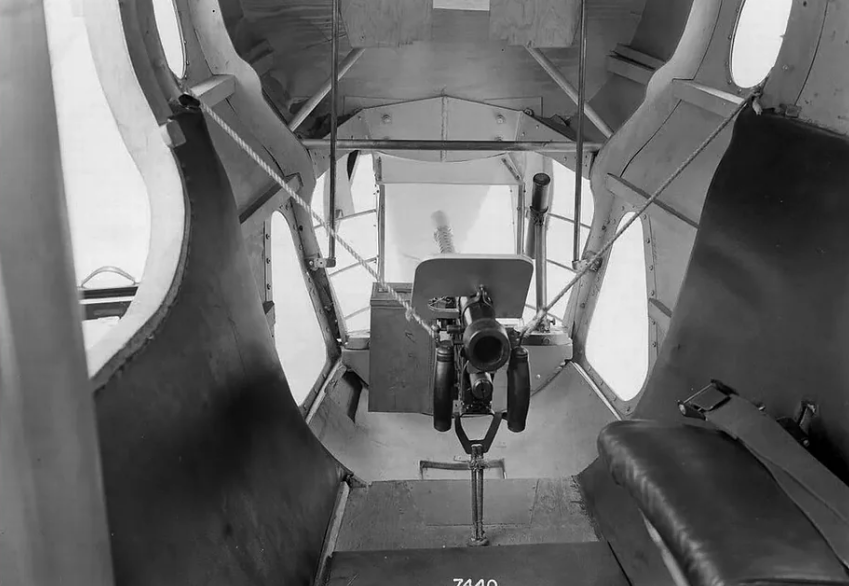
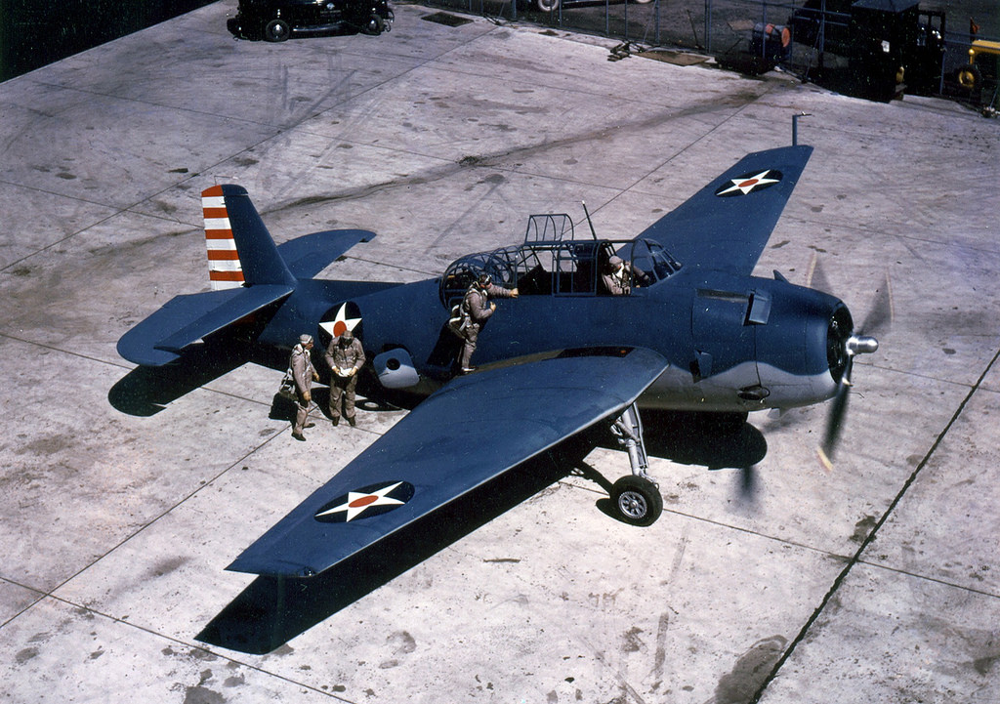
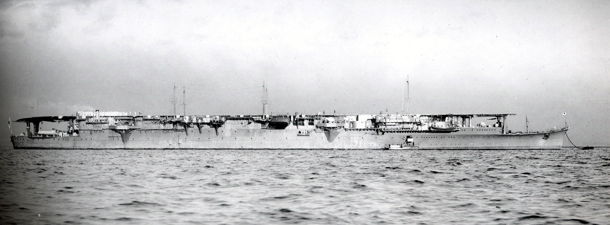
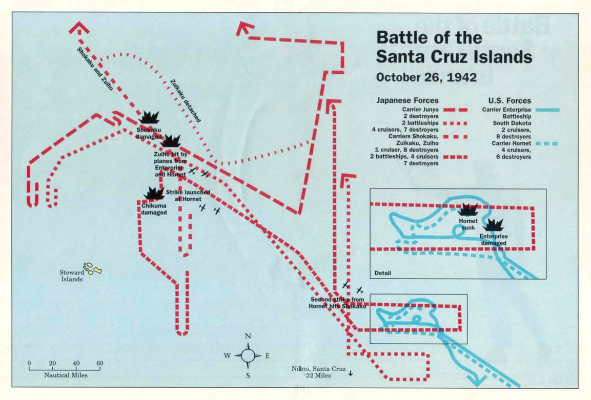

산타 크루즈에서의 레이더 이야기 (2) - 일본해군에게 레이더는 필요없다
게시: 2024-04-18T06:30:30+09:00
<도움이 되지 않은 공대함 레이더> 10월 26일 새벽 3시 10분, 산타 크루즈 제도의 북쪽에서 카탈리나 비행정의 ASV 공대함 레이더에 포착된 것은 역시나 일본해군 항모 기동부대. 그러나 포착하면 뭘하나? 고질적인 무전통신 문제가 재발했는지, 이 보고는 무려 2시간 뒤인 5시 12분에야 엔터프라이즈-호넷의 항모전단에 도착. 게다가 일본 기동부대와의 레이더 접촉을 유지한 채로 그 근처에서 정찰 비행을 계속해야 했을 것 같은 그 카탈리나 비행정은 무슨 이유에서인지 접촉을 유지하지 않고 기지로 되돌아 와버림. 2시간이나 늦은 보고를 받아든 미해군은 지금쯤 일본 기동부대의 위치는 크게 달라졌을 것이므로 공격은 무의미하다고 보고 정찰기만 또 띄움. 만약 이때 무선통신이 제대로 이루어졌다면, 야간에는 아무것도 볼 수 없었던 일본해군은 일방적인 공격을 당했을 것...이라고 생각하기 쉽지만 꼭 그렇지는 않았음. 야간에는 미해군 폭격기도 목표물을 조준할 수 없으니 공격이 불가능. 대신 해뜨기 약 1시간 전에 출격하여 어둠 속을 날아, 레이더 접촉을 유지한 카탈리나 비행정의 유도를 받으며 그 근처 해역에서 대기하고 있다가 일출과 동시에 눈으로 적항모를 확인하고 폭격했었어야 함. 그것만도 엄청나게 유리한 상황이 되었겠으나, 모두 물거품이 됨. 결국 아침 6시 45분, 다시 일본 기동부대를 미해군 정찰기가 포착. 그러나 불과 13분 뒤, 이젠 해가 떴으므로 일본해군 정찰기도 호넷을 눈으로 확인하고 그 위치를 타전. 양측 항모들은 서로 먼저 적함을 치기 위해 서둘러 공격편대를 날려보냄. 이제는 항모 승조원들의 기술적 숙련도의 싸움. <숙련도는 역시 일본해군의 승리> 그런데 확실히 쇼가꾸와 즈이가꾸 승조원들의 숙련도가 더 높았던 모양. 일본해군의 정찰 보고가 13분 늦었지만, 먼저 공격대 발진을 완료한 것은 일본 항모들. 쇼가꾸와 즈이가꾸는 7시 40분까지 총 64대 (Val 급강하 폭격기 21대, Kate 뇌격기 20대, 제로센 호위 전투기 21대, 그리고 지휘 통제용 Kate 2대)를 이함시킴. 42분 만에 64대를 날린 셈. 다만 여기서 일본해군 기동부대에는 정규항모 쇼가꾸와 즈이가꾸 외에, 경항모 즈이호도 있었다는 것은 감안해야 함. 그에 비해 미해군은 13분 일찍 통보받고도 20분 더 늦은 8시 정각까지 15대의 Dauntless 급강하 폭격기, 6대의 Avenger 뇌격기, 8대의 Wildcat 호위 전투기로 구성된 고작 29대의 공격편대를 날림. 뒤이어 3대의 돈틀리스, 9대의 어벤저, 8대의 와일드캣 등 20대의 2차 공격편대를 8시 10분까지 날렸고, 3차로 9대의 돈틀리스, 10대의 어벤져, 7대의 와일드캣으로 이루어진 16대의 공격대를 8시 20분까지 날림. 결과적으로는 일본해군과 비슷한 수인 65대 날리는데 95분이 걸렸고, 일본해군에 비하면 2배 이상 느린 셈.

(Grumman TBF Avenger 뇌격기는 미해군에게 너무나 큰 실망을 안겨준 Devastator 뇌격기를 대체하는 신형 뇌격기로서, 이미 미드웨이 해전때부터 일부 사용을 시작. 그러나 Avenger가 제대로 활약을 시작한 것은 이 산호해 해전부터. 참고로 TBF는 Torpedo Bomber Grumman이라는 뜻. F는 미해군에서 Grumman사에게 지정한 식별 기호. 나중에는 General Motors에서도 Avenger를 생산하기 시작했는데, 제네럴 모터스에서 생산한 어벤저들은 TBM Avenger라고 불림. 제네럴 모터스에게 부여된 식별 기호가 M이었기 때문.)

(TBF Avenger는 WW2 당시 단발 항공기로는 가장 큰 항공기. 같은 함재폭격기라고 하지만 2인승 SBD Dauntless는 기체 무게가 약 4.2톤에 날개폭 12.65m인 것에 비해 3인승인 어벤저는 무려 7톤에 16.51m.)
 
(다들 별로 주목하지 않지만 Avenger에는 기체 아래쪽 부분에 후방 기총이 하나 더 있음. 그 내부의 모습. 이 기총은 평소에는 무전수이자 폭격수가 담당. 어뢰를 달고 날아갈 때는 폭격수로서 할 일은 없으나, 종종 어벤저는 일반 폭탄을 달고 임무에 나섰음. 그럴 경우 수평 폭격을 해야 했던 어벤저는 폭탄을 정확히 조준하기 위해 폭격수가 별도로 필요했고, 폭격수는 B-17에 탑재되었던 미군의 비밀병기 Norden bombsight를 사용하여 폭탄을 조준. 미육군 항공대의 B-17에서는 폭격수(bombadier)가 장교였으나, 미해군 항공대의 Avenger에서는 사병이 폭격수 역할을 함. 이유는 육상을 폭격하는 B-17에서는 유사시 적의 손에 Norden bombsight가 넘어가지 않도록 반드시 노든 조준경을 파괴해야 했는데, 사병에게 그걸 맡길 수가 없었기 때문이라고. 그에 비해 Avenger는 격추되면 바닷속으로 꼬르륵하므로 굳이 노든 조준경을 파괴할 필요가 없었기 때문.)

(영화를 보면 폭격기에 함께 타는 조종사와 다른 승무원들이 생사를 함께 하는 돈독한 관계처럼 보이는데, 적어도 미해군 뇌격기에서는 장교인 조종사와 사병인 기총수, 무전수는 친하게 지내지는 않았음. 그래서 서로 인터컴으로 대화는 하지만 같은 비행기를 타면서도 서로 얼굴도 모르는 경우가 대부분이었다고. 아무리 그래도 서로 얼굴도 모르겠느냐 싶지만, 조종사는 타고 내릴 때 뇌격기 앞에서, 다른 승무원들은 뒤쪽에서 탔고, 또 내린 뒤에도 조종사는 곧장 아일랜드의 조종사 대기실로, 다른 승무원들은 아일랜드 뒤쪽의 사병 숙소로 향했기 때문에 정말 그랬다고 함. Devastator 뇌격기가 망망대해에 불시착한 실화를 영화화한 '생존자들' (Against the Sun)이라는 2015년 영화에서도, 같은 구명정에 올라탄 뒤에 조종사가 승무원들과 대화하며 '니 얼굴 본 적 있다'라고 이야기하는 장면이 나옴. 그 영화 이야기는 https://nasica1.tistory.com/403 참조.)
게다가 일본 기동부대에서는 2차 3차 공격편대도 추가로 출격시킴. 8시 10분에 쇼가꾸는 19대의 발 폭격기와 5대의 제로센을 날렸고, 8시 40분에 즈이가꾸는 16대의 케이트 뇌격기와 4대의 제로센을 날림. 그러니까 일본해군은 3차례에 걸쳐 총 108대의 함재기를 날려놓은 상태. 일본해군 1차 공격편대는 한꺼번에 적함대에 돌입하기 위해 모여서 대규모 편대를 이룬 뒤 비행했고, 미해군은 다 필요없고 무조건 빨리 치는 것이 장땡이라는 생각으로 저 3개 편대가 모일 생각하지 않고 그냥 따로따로 날아감. 과연 어느 쪽의 판단이 옳았을까? <있으나마나 레이더> 일단 일본해군의 1차 공격대가 출격을 마치자마자, 의외의 손님들이 문을 두드렸음. 미해군 항모전단에서는 일본해군 기동부대의 위치를 찾기 위해 언제나 그렇듯이 돈틀리스들을 정찰기로 쫙 풀어서 흝고 다녔는데, 그 중 일부가 이 기동부대의 위치를 파악하고 날아왔음. CAP을 돌던 제로센들이 이 돈틀리스들을 쫓아내느라 분주한 동안, 역시 정찰 임무를 띠고 날아왔던 돈틀리스 2대가 상대적으로 경호가 허술했던 경항모 즈이호 위로 슬그머니 날아들어 다이빙을 시작한 것. 놀랍게도 이 2대의 돈틀리스들은 500파운드 폭탄을 각각 모두 명중시켜 가뜩이나 작은 즈이호를 대파. 즈이호는 자력항행은 가능했지만 함재기 이착함이 불가능해짐.

(경항모 즈이호(瑞鳳, 서봉, 상서로운 봉황). 배수량 1만1천톤, 속도 28노트. 워낙 작다보니 함재기는 아무리 꾹꾹 눌러 담아도 30대가 최대. 그럼에도 훨씬 크고 훨씬 비쌌던 전함 야마토보다는 훨씬 쓸모가 많았고 공도 많았음.)
여기서 의문인 것은 쇼가꾸에 달려있던 Type21 레이더. 제로센들은 미군 정찰 돈틀리스들을 쫓아내느라 바빴다고 치고, 이 레이더는 왜 2대의 돈틀리스들이 바로 인근의 즈이호를 습격하는 것을 왜 전혀 탐지 못했을까? 아직 전혀 개선되지 않은 레이더 운용 환경 덕분. 요즘 레이더처럼 자동으로 주변 모든 목표물들이 자동으로 표시되는 PPI scope가 아니라 그냥 거리만 표시되던 A-scope를 쓰던 당시 레이더는 특히 동시에 여러 목표물이 나타나면 정신을 차리기가 어려웠음. 더군다나 포착된 목표물들의 속도와 위치를 종이 지도 위에 하나하나 표시해가며 실시간으로 그 움직임을 추적하는 것은 생각보다 많은 인력과 공간이 필요한 작업. 그런 인력과 공간, 장비 확충 없이, 그저 시키니까 어쩔 수 없이 한다는 식으로 배치된 레이더 운용사로서는 주변에 출격하는 아군기가 잔뜩 존재하는 상황에서 적기 2대를 구별해내는 것이 매우 어려웠을 것. <거봐, 레이더에 너무 의존하면 이렇게 되는 거야!> 미해군의 강점은 레이더로 적기의 내습을 정확히 집어내고 미리 호위 전투기를 정확히 유도할 수 있다는 점. 그에 비해 일본해군의 강점은 뭐니뭐니해도 제로센이라는 강력한 호위 전투기로서, 그렇게 미리 포진한 미해군 와일드캣을 썰어버릴 수 있다는 점. 그런데 서로 상대 항모전단을 먼저 때리겠다며 서둘러 날아가던 양측 공격 편대에게는 드문 일이 벌어짐. 일본 편대가 이함한지 1시간 정도 지난 뒤인 8시 40분, 서로 마주친 것. 물론 정면으로 마주친 것은 아니었고, 서로 육안으로 보이는 거리에서 지나치게 됨. 이럴 때 중요한 것은 누가 먼저 보느냐 하는 것. 과연 어느쪽 조종사들의 시력이 더 좋았을까?

(빨간색이 일본해군 기동부대, 파란색이 미해군 항모전단. 해는 동쪽에 뜬 상태.)
먼저 시간과 위치는 미군에게 압도적으로 유리한 상황. 당시 일본해군 기동부대는 북서쪽, 미해군 항모전단은 남동쪽에 있었고 아침 이른 시각이었으므로 해는 동쪽에 있는 상태. 이럴 경우 미해군 함재기들은 해를 등지고 날아가므로 일본해군 조종사들은 미군 함재기를 보기가 어려움. 그러나 하늘은 넓고 일본해군 조종사들의 눈이 확실히 더 좋았던 모양. 혹은 미해군 조종사들은 그동안 레이더의 유도를 받는 것에 너무 익숙하여 경계를 소홀히 했을 수도 있음. 그런 불리한 상황 속에서도 일본 조종사들이 먼저 미해군 함재기들을 보았을 뿐만 아니라, 미군이 눈치 채기 전에 즈이호에서 발진한 제로센 9대가 따로 떨어져나와 빙 우회하여 오히려 해를 등진 상태에서 미해군 함재기들을 덮침. 그러나 확실히 경항모 즈이호의 조종사들은 정규항모 조종사들에 비해 실력이 딸렸는지 아니면 워낙 소수로 다수의 적기에 도전하는 것이 어려웠는지, 완벽한 기습을 수행했는데도 매우 인상적인 전과를 거두지는 못함. 제로센 4대가 격추되는 동안 미군은 와일드캣 3대와 어벤저 2대가 격추되고, 추가로 와일드캣 1대와 어벤저 2대가 심한 손상을 입고 항모로 회항. 그리고 살아남은 제로센들 5대는 탄약이 소진된 관계로 더 이상 공습에 참여하지 못하고 역시 일본 기동부대로 회항. 그런데 이 조우는 정말 예상치 못했던 결과를 낳음. (다음주에 계속)